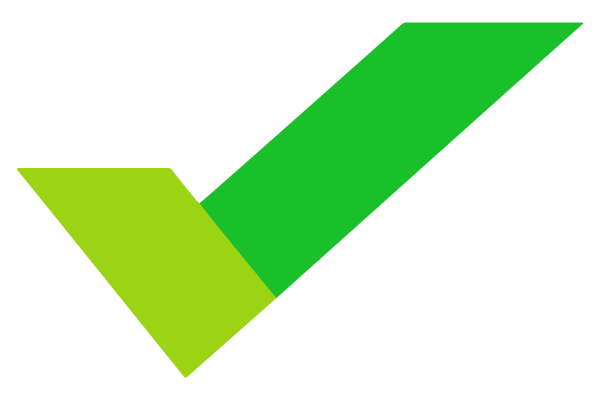

Выпускной
для Epic Skills
Обо мне
- Меня зовут Андрей Гурылев, я работаю в компании Wrike
- Я верстаю 9 лет, сейчас зовусь Senior Frontend Developer
и чему-то, кажется, научился за эти годы
- Сегодня я поделюсь подробностями о том, как жить после курса вёрстки
- Расскажу, как найти работу, какую работу искать, как там работать и куда дальше пойти за развитием
Если ли жизнь после курса?
Честно:
- Придётся много батрачить без сна и еды
- Минимум полгода нарабатывать портфолио
- Работать за бесплатно, «за спасибо», «за работу в портфолио»
Фриланс
- Не у кого учиться дальше
- Изоляция в собственном мирке
- Глупые ошибки
- Попадания в тупик
- Испорченная репутация
Свои проекты
Всё то же, что и во фрилансе, только ещё и…
- чаще всего - для себя = бесплатно
- если не для себя, то для друзей
- друзья просят «по-братски», «как другу» бесплатно или за гроши
- клиенты - чаще всего мудаки. требуют много, не понимают специфики
- Часто специально ищут тех, кто готов работать за гроши
Не работайте с друзьями
Ведь они
- просят бесплатно или за гроши
- не понимают сложности вашей работы
- не умеют строить работу с веб-разработчиком
- перед ними неудобно
скорее всего вам придётся разрываться между оплачиваемой работой и работой для друзей, чтобы как-то кормить себя
Не работайте с друзьями
- всё получится плохо.
- друзья останутся о вас плохого мнения
- ваши отношения будут испорчены
- они испортят вашу репутацию среди их друзей
- кароче: неприятно.
Не работайте с мудаками
Мудака можно определить по его заказу
- Антилогика: «Сделайте красный покраснее»
- Антиприбыль: «Сделайте так, потому что мне так нравится больше»
- Жополизы: «Сделайте так, потому что так больше нравится моему боссу»
- Самостоятельные: «Я немного программировал в школе, так что даже сам могу этот сайт сделать, но у меня времени нет»
- Художники: «Сделайте красиво!», «Поиграйте со шрифтами»
- Адовые клиенты (clfh.org)
Устройство на работу
Этот вариант самый приятный
- интересные и сложные задачи
- развитие поощряют
- опытные коллеги, кураторы
- компания с именем
- зарплата не важна!
Скорее всего студии
Соберите портфолио
Добавляйте всё
- Проекты из эпика
- pet-проекты (для себя)
- Эксперименты
Любой код!
Как определить плохие компании?
Заранее
- Непонятная вакансия
это когда вам не то текст надо писать, не то сайт дизайнить, не то его верстать. плюс заодно ещё письма и бэкэнд. и да, компы и принтеры чинить в офисе.
- Ебеня
если компания в районе м. Кировский завод - вряд ли там будет ок
Как определить плохие компании?
На собеседовании
- Толпа
это когда целый офис пришёл посмотреть, как вы облажаетесь
- Неквалифицированный HR
когда вас приводят в коридор, задают абстрактные вопросы на отвлечённые темы, не хвалят компанию, а только пытаются унизить вас
- HR-программист
если вас пытается по коду собеседовать HR - это очень плохой признак
А хорошие?
- Только нужное
HR задают точные вопросы по вашему резюме и о вас в компании
- Только по уровню
Программисты задают технические вопросы только на уровень вакансии, на которую вы откликнулись
- Не забывая базис
Программисты задают вопросы последовательно, не забывая общие темы
Как попасть в компанию N?
Никак.
- Не ждите, когда появится подходящая вакансия
- Устройтесь работать куда-то ещё, всегда можно будет уволиться
Как работать
- Будьте самостоятельными
- Умейте спрашивать
- Постоянно развивайтесь
- Не ленитесь
- Оценивайте работу во времени и деньгах
- Цените свой труд: если начали работу - не бросайте её
- DRY - Don't repeat yourself
Планируйте
Всё ваше рабочее время в любом месте работы нужно планировать.
- С разделением времени: оценки, декомпозиция, помидоры
- Без перегрузок, с оценкой: Agile, Scrum, Kanban
- Выполняйте до конца: Getting Things Done
Оценивайте свои силы
- Если вы переутомились - нужно отдохнуть
Попытка «доделать сегодня» в 22:00 ни к чему хорошему не приводит
- Не ленитесь
Искать повод не работать на протяжении дня - это плохо (кэп)
- Спите своевременно
Соблюдайте режим, ложитесь спать в одно время, высыпайтесь
Иногда лучше остаться спать дома в понедельник, чем провести всю неделю отлаживая написанный в понедельник код.
Продолжайте учиться
Думаете, отучились курс и всё? А нет.
- Версионируйте любой код
- Найдите наставника
- Просите делать код-ревью
- Выучите английский наконец
Куда развиваться дальше
- Развивайте фронтенд
- Читайте статьи
- Читайте книги
- Ходите на митапы и конференции
- Учавствуйте в групповом кодинге и хакатонах